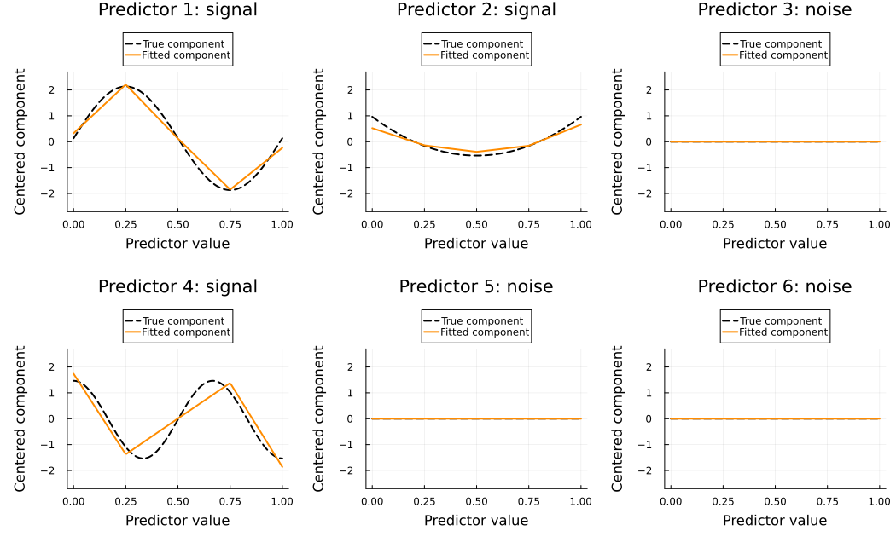

Sparse additive regression
A predictor can matter even when its relationship to the response is curved rather than linear. Additive regression fits one curve per predictor; sparsity selects which curves to keep. Grouping the basis coefficients allows the estimator to remove a whole predictor instead of retaining isolated pieces of its curve.

Sparse additive regression with a finite spline basis, fitted as a group lasso. The model is y = a + Σⱼ fⱼ(xⱼ) + ε with one unknown function fⱼ per predictor, and the aim is to select the predictors whose functions are not zero. Each fⱼ is written in a small fixed basis on [0, 1], fⱼ(x) = Σₖ bⱼₖ Bₖ(x), and the coefficients bⱼ of one predictor form one group. The fit minimizes
\[\min_b\;\frac{1}{2n}\|z-Zb\|_2^2+\lambda\sum_{j=1}^p w_j\|b_{G_j}\|_2, \qquad w_j=\sqrt{|G_j|},\]
where z = y − mean(y) and Z has one centered, orthonormalized block of columns per predictor. The squared loss is (1/n) times ProximalBase's LeastSquaresLoss(z, Z), which is ‖z − Z b‖²/2. The penalty is GroupNormL2(λ, groups) with its default weights, the iterate is a BlockIterate, and the solver is CDSolver with cyclic order; this is the group lasso row of Supported problems. The basic use of these types is explained in Group lasso, and this page does not repeat it. The ordinary lasso is Lasso.
What is penalized is the coefficient vector of each block in the orthonormal representation built below. In that representation ‖bⱼ‖₂ is the empirical norm of the fitted component of predictor j on the sample, which is the penalty of the sparse additive model of Ravikumar, Lafferty, Liu and Wasserman (2009), Sparse additive models, restricted to a fixed finite basis; they note that a basis expansion of their model leads to a group lasso. This page is a finite-basis group-lasso approximation, not their procedure: that procedure fits each component nonparametrically, with smoothers in backfitting, while here each component is confined to the span of a fixed set of four piecewise-linear functions. The page shows what the group lasso does on such a basis, on one simulated data set.
using LinearAlgebra, Random
using ProximalBase, ProximalSolversStatistics is not a dependency of this project, so the mean is a one-line function.
avg(v) = sum(v) / length(v)avg (generic function with 1 method)The basis
The basis on [0, 1] is piecewise linear, B(x) = [x, (x − 0.25)₊, (x − 0.5)₊, (x − 0.75)₊] with K = 4 columns. It has no constant column. A combination of the columns whose value is constant on [0, 1] has slope zero on [0, 0.25], which forces the coefficient of x to be zero, and then the slope zero on each next interval forces the other coefficients to be zero. On the sample, a combination is constant exactly when it takes one value at all sample points, and a function that is linear on an interval and takes one value at two distinct points of it has slope zero there. The centered columns are therefore linearly independent when the sample has at least two distinct points in each of the four intervals, which the rank check below confirms for this data.
knots = [0.25, 0.5, 0.75]
K = 1 + length(knots)
basismatrix(x) = hcat(x, (max.(x .- t, 0) for t in knots)...)basismatrix (generic function with 1 method)Data
There are n = 200 observations of p = 6 independent predictors, uniform on [0, 1]. The generating functions of predictors 1, 2 and 4 are nonlinear, and the functions of predictors 3, 5 and 6 are identically zero. The intercept is a = 1 and the noise has standard deviation 0.3.
rng = Xoshiro(370)
n, p = 200, 6
sigma = 0.3
a_true = 1.0
truth = [x -> 2sin(2π * x), x -> 6(x - 0.5)^2, x -> 0.0, x -> 1.5cos(3π * x), x -> 0.0, x -> 0.0]
true_groups = [1, 2, 4]
X = rand(rng, n, p)
mu = a_true .+ sum(truth[j].(X[:, j]) for j in 1:p) # the regression function at the sample
y = mu + sigma * randn(rng, n)
@assert all(isfinite, y)The design matrix
For predictor j, B̃ⱼ = B(X[:, j]) − mⱼ is the basis matrix with its column means mⱼ removed, and B̃ⱼ = Qⱼ Rⱼ is its thin QR factorization. The block is Zⱼ = √n Qⱼ, so that Zⱼᵀ Zⱼ / n = I up to rounding. Its columns have mean zero because Qⱼ = B̃ⱼ Rⱼ⁻¹ is a combination of centered columns (Rⱼ is invertible by the rank check below). With Zⱼ bⱼ the fitted component on the sample, ‖Zⱼ bⱼ‖²/n = ‖bⱼ‖²: the penalty ‖bⱼ‖₂ is the empirical L2 norm of the fitted component of predictor j on the training sample.
means, Rs, blocks = Vector{Float64}[], Matrix{Float64}[], Matrix{Float64}[]
for j in 1:p
B = basismatrix(X[:, j])
m = vec(sum(B, dims = 1)) / n
F = qr(B .- m')
Q, R = Matrix(F.Q), Matrix(F.R)
@assert size(Q) == (n, K) && size(R) == (K, K)
@assert rank(B .- m') == K && minimum(abs, diag(R)) > 1e-3 # the centered block has full rank
@assert norm(B .- m' - Q * R) <= 1e-12 * norm(B)
push!(means, m); push!(Rs, R); push!(blocks, sqrt(n) * Q)
end
Z = hcat(blocks...)
@assert size(Z) == (n, p * K)
for j in 1:p
@assert norm(blocks[j]' * blocks[j] / n - I) <= 1e-12
@assert maximum(abs, sum(blocks[j], dims = 1)) / n <= 1e-12
end
println("worst condition number of a centered block: ",
round(maximum(cond(basismatrix(X[:, j]) .- means[j]') for j in 1:p), digits = 1))worst condition number of a centered block: 23.3The fitted component of predictor j at a new point x is read from the coefficients through the same transformation, f̂ⱼ(x) = √n (B(x) − mⱼ)ᵀ Rⱼ⁻¹ bⱼ, because Zⱼ bⱼ = √n Qⱼ bⱼ = √n B̃ⱼ Rⱼ⁻¹ bⱼ. At the training points it must reproduce Zⱼ bⱼ.
groups = [collect(((j - 1) * K + 1):(j * K)) for j in 1:p]
@assert reduce(vcat, groups) == collect(1:(p * K)) # disjoint, in order, covering 1:pK
component(j, b, x) = sqrt(n) * ((basismatrix(x) .- means[j]') * (Rs[j] \ b[groups[j]]))
predict(b, Xnew) = avg(y) .+ sum(component(j, b, Xnew[:, j]) for j in 1:p)predict (generic function with 1 method)The problem and its penalty levels
The response is centered, z = y − mean(y). Each of the pK columns of Z has mean zero, so for a fixed b the minimizer over the intercept a of ‖y − a − Z b‖²/(2n) is a = mean(y) and the minimum is ‖z − Z b‖²/(2n); the intercept of the full fit is mean(y). The group optimality condition at b = 0 is ‖Zⱼᵀ z‖₂/n ≤ λ wⱼ for each j; the problem is convex, so b = 0 is a minimizer when λ is at least λmax = maxⱼ ‖Zⱼᵀ z‖₂ / (n wⱼ).
z = y .- avg(y)
@assert abs(sum(z)) <= 1e-12 * n
f = (1 / n) * LeastSquaresLoss(z, Z)
w = fill(sqrt(K), p)
scores = [norm(blocks[j]' * z) / (n * w[j]) for j in 1:p]
lambdamax = maximum(scores)
println("scores = ", round.(scores, digits = 4), "; λmax = ", round(lambdamax, digits = 4))scores = [0.6344, 0.2455, 0.0582, 0.4626, 0.0693, 0.1319]; λmax = 0.6344The objective and the group optimality conditions are computed here from the data. With g = Zᵀ(Z b − z)/n, a nonzero group satisfies g[G] + λ w b[G]/‖b[G]‖ = 0, and a zero group satisfies ‖g[G]‖ ≤ λ w. The function returns the largest violation over the nonzero groups, ‖g[G] + λ w b[G]/‖b[G]‖‖, and over the zero groups, max(‖g[G]‖ − λ w, 0).
objective(b, lambda) = norm(z - Z * b)^2 / (2n) + lambda * sum(w[j] * norm(b[groups[j]]) for j in 1:p)
function violations(b, lambda)
grad = Z' * (Z * b - z) / n
nz, zr = 0.0, 0.0
for j in 1:p
G = groups[j]
if iszero(norm(b[G]))
zr = max(zr, norm(grad[G]) - lambda * w[j])
else
nz = max(nz, norm(grad[G] + lambda * w[j] * b[G] / norm(b[G])))
end
end
nz, zr
endviolations (generic function with 1 method)The solver tolerance 1e-12 is a threshold on the change of the coefficients over a pass, relative to the scale of the response with the default relative = true, and converged reports that the change test passed. The optimality statements below rest on violations. Its tolerance 1e-9 λ is a choice made small against the penalty level; the printed violations are the measured values.
function fit(lambda)
g = GroupNormL2(lambda, groups)
x = BlockIterate(Float64, p * K, g)
res = solve!(x, f, g, CDSolver(order = :cyclic, momentum = false, tol = 1e-12))
@assert res.minimizer === x
b = Vector(x)
@assert all(isfinite, b)
active = sort(collect(activecoordinates(x)))
@assert active == [j for j in 1:p if any(!iszero, b[groups[j]])] # active groups = nonzero blocks
@assert all(collect(blockindices(x, j)) == groups[j] for j in 1:p)
(; b, active, res, g)
endfit (generic function with 1 method)At and above λmax
Three statements are checked. First, from the data alone: at λ = λmax, b = 0 satisfies the zero-group condition ‖g[G]‖ ≤ λ w with g = Zᵀ(Z·0 − z)/n, which violations(zeros(p * K), lambdamax) evaluates from the gradient of the whole design. The bound is 1e-12 λ and not 0, because this evaluation and scores (which divide the block norm by wⱼ) are different float computations of the same comparison.
Second, the solver at λ = λmax. Here b = 0 is a minimizer, and for a group that attains λmax, ‖Zⱼᵀ z‖/n equals λmax wⱼ up to rounding, so the solver's own comparison of the two is at the rounding level. The 1.10.13 and 1.13.4 runs of this page differ here (a block of norm 2.8e-16 remains on 1.10.13). The check asserts a rounding-level result: each block norm is at most 1e-12 (an absolute bound; the printed scores lie between 0.05 and 0.7), and the violations are at most 1e-12 λ.
Third, at λ = (1 + 10⁻⁶) λmax and at λ = 1.5 λmax the solver returns exact zeros and reports no active group. The relative margin 10⁻⁶ is much larger than the rounding of double precision (about 10⁻¹⁶), so the comparison does not sit at the boundary.
nz0, zr0 = violations(zeros(p * K), lambdamax)
@assert nz0 == 0 && zr0 <= 1e-12 * lambdamax
rmax = fit(lambdamax)
largest = maximum(norm(rmax.b[G]) for G in groups)
nzmax, zrmax = violations(rmax.b, lambdamax)
@assert largest <= 1e-12 && nzmax <= 1e-12 * lambdamax && zrmax <= 1e-12 * lambdamax
println("at λ = λmax: zero-group violation of b = 0 ", zr0, "; solver: largest block norm ", largest,
", violations ", nzmax, " and ", zrmax)
for lambda in ((1 + 1e-6) * lambdamax, 1.5 * lambdamax)
r = fit(lambda)
@assert isempty(r.active) && all(iszero, r.b)
end
println("all blocks are exactly zero at λ = (1 + 1e-6) λmax and at λ = 1.5 λmax")at λ = λmax: zero-group violation of b = 0 0.0; solver: largest block norm 0.0, violations 0.0 and 0.0
all blocks are exactly zero at λ = (1 + 1e-6) λmax and at λ = 1.5 λmaxThree penalty levels
The levels are fixed fractions of λmax. For each, the page checks the objective reported by the solver against objective, the identity between the centered and the original-scale objectives, the optimality conditions, and the reconstruction of the fitted signal from the components. It then reports the selected groups and the error of the fitted regression function on 2000 fresh points, which is measured against the true regression function, not against the noisy response. The noise variance is σ² = 0.09. The error of the fit with b = 0, the solution at 1.5 λmax, is printed first for reference; an estimate that equals the truth has error 0.
Xnew = rand(Xoshiro(371), 2000, p)
munew = a_true .+ sum(truth[j].(Xnew[:, j]) for j in 1:p)
err(b) = avg((predict(b, Xnew) - munew) .^ 2)
println("error of the constant fit (b = 0): ", round(err(zeros(p * K)), digits = 4))
fractions = [0.3, 0.1, 0.02]
fits = []
for frac in fractions
lambda = frac * lambdamax
r = fit(lambda)
b = r.b
# the reported objective against the independent one
obj = objective(b, lambda)
@assert abs(r.res.minimum - obj) <= 1e-10 * (1 + abs(obj))
# the intercept: at `a = mean(y)` the derivative in `a` is zero, and the original-scale
# objective equals the centered one
orig(a) = norm(y .- a .- Z * b)^2 / (2n) + lambda * sum(w[j] * norm(b[groups[j]]) for j in 1:p)
@assert abs(avg(y .- avg(y) .- Z * b)) <= 1e-12
@assert abs(orig(avg(y)) - obj) <= 1e-12 * (1 + obj)
@assert orig(avg(y) + 1e-3) > orig(avg(y)) && orig(avg(y) - 1e-3) > orig(avg(y))
# the components: the evaluation map at the training points, the reconstruction of `Z b`, and
# the group norm as the empirical norm
for j in 1:p
cj = component(j, b, X[:, j])
@assert norm(cj - blocks[j] * b[groups[j]]) <= 1e-10
@assert abs(avg(cj .^ 2) - norm(b[groups[j]])^2) <= 1e-12
end
@assert norm(sum(component(j, b, X[:, j]) for j in 1:p) - Z * b) <= 1e-10
@assert norm(predict(b, X) - (avg(y) .+ Z * b)) <= 1e-10
# the optimality conditions
nz, zr = violations(b, lambda)
@assert nz <= 1e-9 * lambda && zr <= 1e-9 * lambda
println("λ = ", frac, " λmax = ", round(lambda, digits = 4), ": selected groups ", r.active,
" (true ", true_groups, "); passes = ", r.res.passes,
"; violations ", nz / lambda, " λ (nonzero), ", zr / lambda, " λ (zero)",
"; error ", round(err(b), digits = 4),
"; training residual mean square ", round(avg((y - predict(b, X)) .^ 2), digits = 4))
push!(fits, (; lambda, r.b, r.active))
enderror of the constant fit (b = 0): 3.3857
λ = 0.3 λmax = 0.1903: selected groups [1, 2, 4] (true [1, 2, 4]); passes = 11; violations 5.63676733130881e-15 λ (nonzero), 0.0 λ (zero); error 0.7392; training residual mean square 0.6872
λ = 0.1 λmax = 0.0634: selected groups [1, 2, 4] (true [1, 2, 4]); passes = 14; violations 1.5633668015569632e-14 λ (nonzero), 0.0 λ (zero); error 0.2506; training residual mean square 0.2758
λ = 0.02 λmax = 0.0127: selected groups [1, 2, 3, 4, 5, 6] (true [1, 2, 4]); passes = 20; violations 3.228618841406384e-12 λ (nonzero), 0.0 λ (zero); error 0.1819; training residual mean square 0.2181At the largest of the three levels some groups are zero and some are not. This is a statement about this seed, and the assertion does not claim that the nonzero groups are the true ones.
@assert 0 < length(fits[1].active) < pFitted and true components
The fitted components are centered on the training sample, so the true functions are compared after subtracting their own sample means over the training rows. The table is for the middle level. A predictor whose group is zero has the fitted value 0 on the whole grid.
mid = fits[2]
grid = collect(0.0:0.2:1.0)
for j in (true_groups..., 3)
c = avg(truth[j].(X[:, j]))
println("predictor ", j, j in mid.active ? "" : " (zero group)", ": x = ", grid)
println(" true ", round.(truth[j].(grid) .- c, digits = 2))
println(" fitted", round.(component(j, mid.b, grid), digits = 2))
endpredictor 1: x = [0.0, 0.2, 0.4, 0.6, 0.8, 1.0]
true [0.13, 2.04, 1.31, -1.04, -1.77, 0.13]
fitted[0.33, 1.83, 0.96, -0.67, -1.53, -0.24]
predictor 2: x = [0.0, 0.2, 0.4, 0.6, 0.8, 1.0]
true [0.97, 0.01, -0.47, -0.47, 0.01, 0.97]
fitted[0.53, -0.01, -0.29, -0.3, 0.01, 0.66]
predictor 4: x = [0.0, 0.2, 0.4, 0.6, 0.8, 1.0]
true [1.47, -0.5, -1.25, 1.18, 0.43, -1.53]
fitted[1.74, -0.75, -0.54, 0.56, 0.73, -1.86]
predictor 3 (zero group): x = [0.0, 0.2, 0.4, 0.6, 0.8, 1.0]
true [0.0, 0.0, 0.0, 0.0, 0.0, 0.0]
fitted[0.0, 0.0, 0.0, 0.0, 0.0, 0.0]The group penalty zeroes a block as a whole. At a nonzero block the optimality condition gives b[G] = −(‖b[G]‖/(λ w)) g[G], so an entry of the block is zero only if the corresponding entry of the gradient g is zero, which does not happen generically. The count below is for the middle level. The assertion states that on this data each block has either all K coefficients nonzero (the group is active) or none; it is a statement about this fit and not a property of every data set.
nonzero_per_group = [count(!iszero, mid.b[groups[j]]) for j in 1:p]
println("nonzero coefficients per group: ", nonzero_per_group)
@assert all(nonzero_per_group[j] == (j in mid.active ? K : 0) for j in 1:p)nonzero coefficients per group: [4, 4, 0, 4, 0, 0]Reading the figure
The dashed curves are the generating functions centered on the training sample; the orange curves are the fit at 0.1 λmax, the middle level. Comparing curves on this common scale separates shape approximation from the arbitrary intercept allocation. A flat zero fitted curve means the entire predictor block was removed. Piecewise-linear curves cannot reproduce all of the generating curvature, and regularization shrinks their amplitudes.
using Plots
plot_grid = collect(range(0.0, 1.0; length=151))
component_panels = map(1:p) do j
centered_truth = truth[j].(plot_grid) .- avg(truth[j].(X[:, j]))
panel = plot(plot_grid, centered_truth; color=:black, linestyle=:dash, linewidth=2,
label="True component", title="Predictor $j: $(j in true_groups ? "signal" : "noise")",
xlabel="Predictor value", ylabel="Centered component", ylims=(-2.7, 2.7))
plot!(panel, plot_grid, component(j, mid.b, plot_grid); color=:darkorange,
linewidth=2, label="Fitted component")
end
plot(component_panels...; layout=(2, 3), size=(1050, 650), legend=:outertop,
left_margin=5Plots.mm, bottom_margin=5Plots.mm)
savefig("sparse_additive_regression.svg")
nothingLimitations
- The fit is a group lasso on a fixed finite basis with fixed knots. The number and place of the knots and the penalty levels are not tuned, and the page does not choose
λby cross-validation or an information criterion. - The components are piecewise linear with kinks at the knots, so curvature inside a piece is not represented. Changing the function space (the knots or the type of basis) can change the estimate; a change of coordinates within the same space does not.
- The group norm
‖bⱼ‖₂equals the empirical norm of the fitted component on the training sample, whose rows define the centering and the orthonormalization. The identity‖Zⱼ bⱼ‖²/n = ‖bⱼ‖²holds by that normalization and need not hold at other points. The penalty is the SpAM penalty on a fixed finite basis, and the fit is a finite-basis approximation, not the SpAM procedure, which fits the components nonparametrically with smoothers. - The weights
wⱼ = √Kare equal across the predictors, so the penalty isλ √K Σⱼ ‖bⱼ‖₂, a rescaling ofλ. - The selected groups are reported for one simulated data set and compared with the truth. They are no guarantee of recovery on other data, and the page asserts none.
CDSolver'sconvergedis a test of the change over a pass. The optimality statements on this page come fromviolations, which is computed fromZandz.- The data are dense
Float64; no other element type or iterate is run here.
What we learned
A small basis expansion turns nonlinear predictor selection into a group lasso. Centering identifies the intercept, and block orthonormalization makes the group norm equal to the fitted component’s empirical size. The component plots reveal both curve approximation and selection; independent reconstruction, objective and group KKT checks validate the fit.
The figure is generated from this script during the documentation build. Run the script alone for the same seeded calculations and checks without loading Plots.